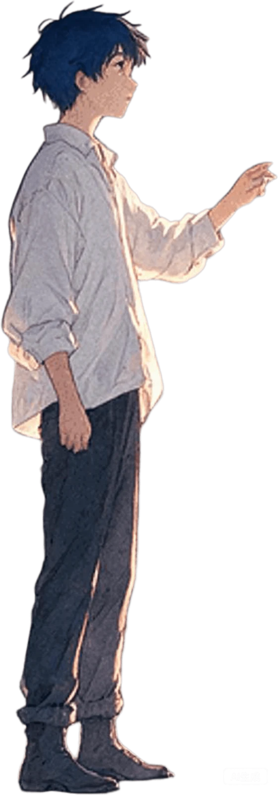
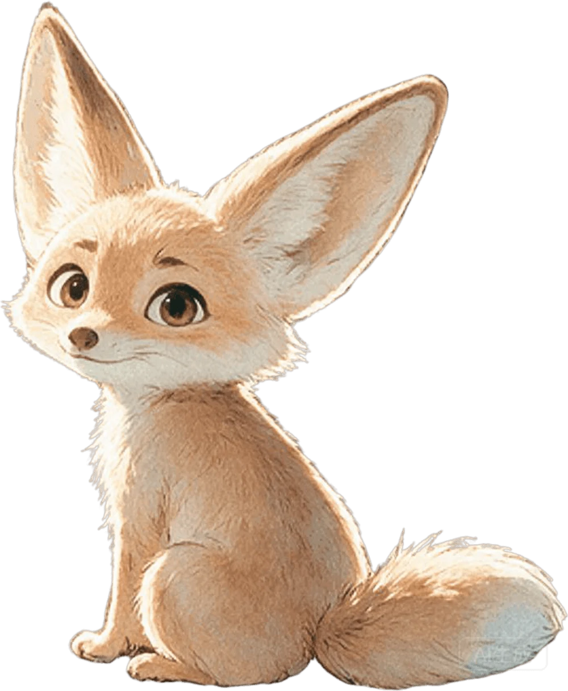

after the rain · first light
follow the thread
clone any app into a playable prototype
an agent skill · captures real apps, sites or links · rebuilds them as living local web prototypes with design assets
curl -fsSL https://raw.githubusercontent.com/hello-cqq/design-clone/main/install.sh | bash
dusk that is also dawn
the grass is calling
Dislocated Spacetime
an AI companion world: two voices, one sea, a thread between night and morning. step in and talk.

noon · wind through grass ears
city lights ahead
Animal Paradise
a zootopia-grade 3D town where a fennec fox waves at you: pet, sing, build, wander the map.
night rain front · three familiar worlds
step inside one
Study replicas, faithfully cloned
the shelf
open the door · full gallery
Every clone, one shelf